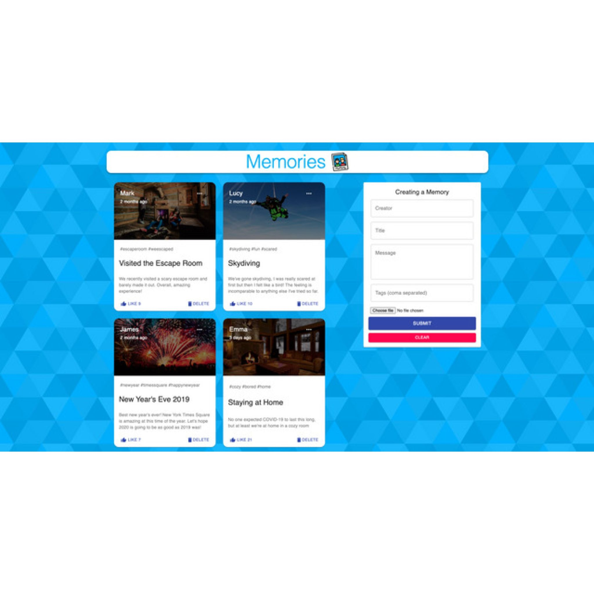
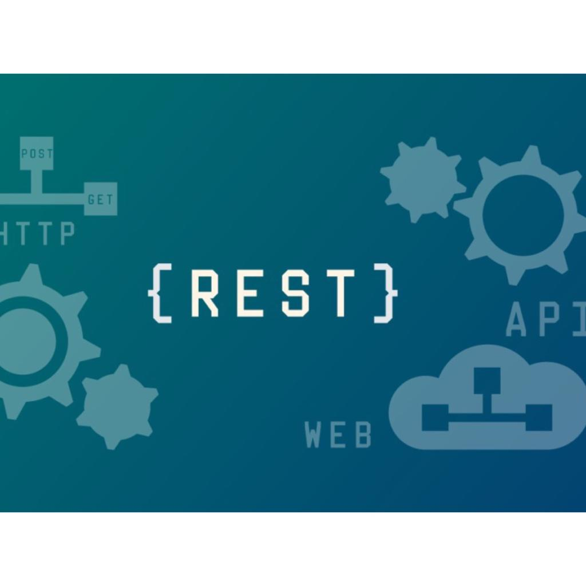
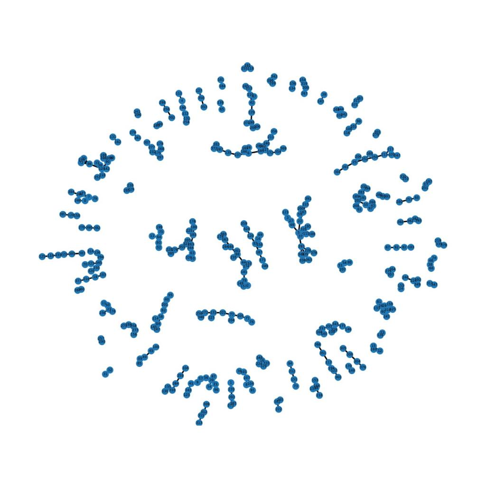

Implemented Proteochemometrics model using Support Vector Machines, and Deep Neural Networks to come up with new drug compositions based on how similar compounds bind to similar targets. Found out that temporal split was better than random split and compared the models using BEDROC and MCC metrics. Deep Neural Networks had the best results after 200 epochs outperforming SVM by 30%.

Designed a responsive web-based application that facilitates users to post pictures, videos, and entries. Built 10+ back-end APIs using NodeJS, and Express.JS with MongoDB Atlas as the backend database. Deployed an interactive front-end using React, and CSS where users can view up to 10 posts per page, and like and comment on others' posts
Scraped 1000 job postings from Glassdoor using Selenium to extract features and performed data cleaning using Pandas and NLTK. Executed feature engineering along with some Exploratory Data Analysis and combined text and numeric features. Used Random Forest algorithm with a Mean Absolute Error of 11.22, and productionized the ML model using Flask.

Developed a web application using Flask that returns a list of all the relevant web APIs from a dataset based on the search provided. Parsed, cleaned, and loaded the dataset with 50K rows containing web API details into MongoDB compass. Queried the database from the server side by enabling 10 different filters on the client side using pymongo.

Using the metrics published as part of this project, we can better understand the trends on Craigslist, a popular platform where buyers meet sellers. This project helps users to make informed decisions and helps the manufacturers better understand their market and their competitors as well.

This project helps in analyzing the performance of different agencies in NYC when it comes to handling non-emergent requests. Through this, we can seek answers to various questions as to how the complaints are distributed, which complaint is most prevalent, which Borough makes the most complaints, and a lot more.

Trained and Classified sentences into respective languages using Decision Trees and Adaboost stumps algorithm. Achieved 92% classification accuracy.

Given a map with terrain information, elevation contours, and a set or sequence of locations to visit. I generated optimal paths for orienteering using A* algorithm.

Data science often relies on data to be labeled by human annotators. However, humans often disagree on which labels to provide the data. In this project, I explored the relationship between human labels, their disagreements, and their meaning.
Scraped more than 500 recent news articles from the NDTV webpage using BeautifulSoup with python. Pre-processed text by tokenizing, lemmatizing, and removing stopwords using NLTK to improve the performance by 30%. Extracted 15 different topics by training the LDA model to compute a topic-coherence score of 0.62.

Several attributes from a student dataset were selected. Computed difference between rows using normalize function and Euclidean distance function. With the help of networkx library, graph was visualized.

Developed and hosted a web service that provides a client application that invokes CRUD operations, and a coordination handler from the server end that enforces the correct order of the invocation. All CRUD operations are reflected on a backend database.